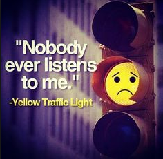

Personification

Personification is a figure of speech where inanimate objects are given human like qualities. This means that the non-human objects are given human like traits such as feelings, emotions, and their actions.
Examples:
The fire swallowed the entire forest.
The flowers danced in the gentle breeze.
Personification is the most common literary device used by writers and poets. They rely on personification to bring inanimate objects to life so the readers can have a better understanding of the text. Also, we understand a piece of literature better if it’s from a human perspective or given human traits.